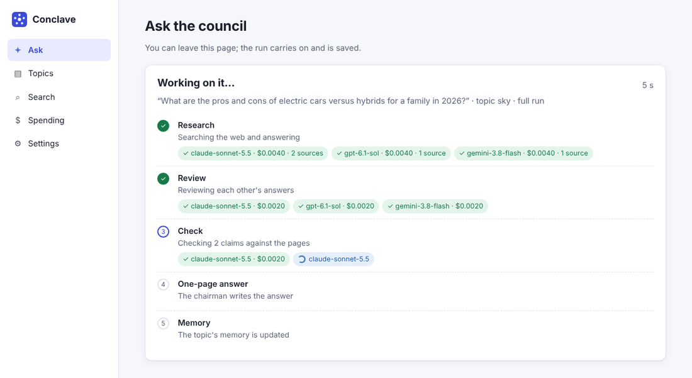
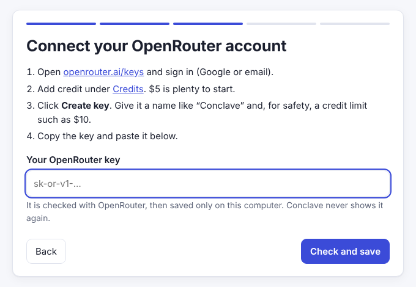
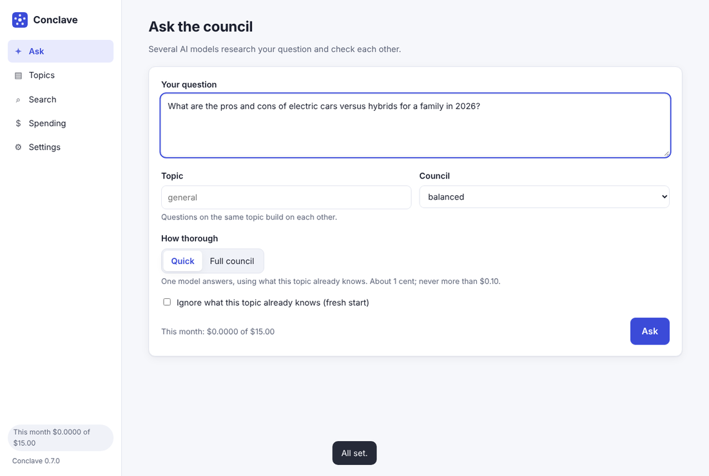
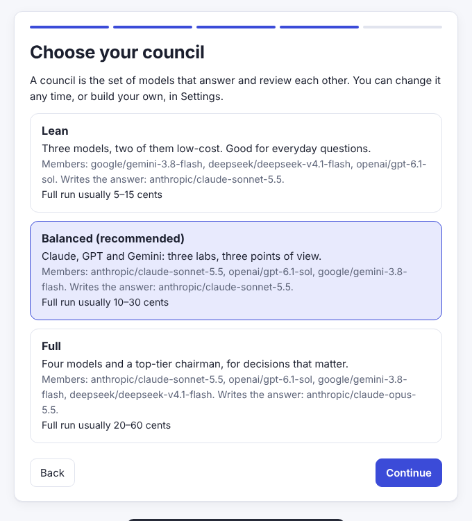

An AI council that remembers
Ask once, and Claude, GPT, Gemini and others research your question, search the web, check each other's work, and agree on one page. What they conclude is kept on your computer, so every later question on the topic starts from what you already know.

How a question is answered
One AI can be confidently wrong. Several, checking each other and the sources they cite, are much harder to fool.
Recall
Conclave reads what the council concluded before on this topic, and your own notes.
Research
Each model answers on its own, searching the web and citing the pages it used.
Review
Each model critiques the others' answers with the authors hidden, and ranks them.
Check
Key claims are tested against the cited pages. A verdict counts only if its quote is really on the page.
Answer and remember
A chairman writes one page, and the topic's memory is updated under fixed rules.
Every claim says how far to trust it
Agreement between models is never presented as proof. Each key claim on the answer carries a label, worked out by code from the evidence, not chosen by the model.
- verifiedA page the models cited states it, and the checker quoted the words.
- agreed but uncheckedSeveral models agree, from different sources, but no page was checked.
- single sourceEvery model leaned on the same website.
- single modelOnly one model said it.
- disputedThe models disagree, a reviewer challenged it, or a page contradicts it.
Built to keep what you learn
Most AI chats forget. Conclave keeps a memory for each topic you research.
A memory per topic
Conclusions, open disagreements and your own notes are read before every new question on the topic. Nothing is silently deleted; corrections keep the earlier wording.
Yours, on your computer
Everything is saved as plain files in a folder you choose. Conclave has no server of its own and no account to sign up for.
Spending you control
Before anything is sent, Conclave works out the most a question could cost and refuses it if that is over your limit. Monthly caps too.
Choose your council
Pick any models from OpenRouter's live list, with their prices. Models from different labs catch each other's blind spots.
Works with your AI tools
Claude Desktop and Cursor can search your research and ask the council, through the Model Context Protocol.
Open and inspectable
MIT licensed. Every answer, review, quote and cost is saved, so you can see exactly how a conclusion was reached.
A guided app, not a terminal
A short setup in your browser connects your account, picks a council and sets your limits.



Install in one step
Copy one line into a terminal window. Conclave installs itself with its own private copy of Python, puts a shortcut on your desktop and opens in your browser. No Python, Git or administrator rights needed.
You will need an OpenRouter account with a few dollars of credit: one account reaches every AI model, and you pay only for what you use. The setup shows you how.
Just want a look? Try it in your browser with a free GitHub Codespace, from your own GitHub account's free allowance.
- Press the Windows key, type powershell, press Enter.
- Paste this and press Enter:
powershell -ExecutionPolicy ByPass -c "irm https://raw.githubusercontent.com/techtodpk/conclave/main/install.ps1 | iex"
Read it first if you like: install.ps1.
- Open Terminal (on a Mac: Cmd+Space, type terminal, Enter).
- Paste this and press Enter:
curl -LsSf https://raw.githubusercontent.com/techtodpk/conclave/main/install.sh | sh
Read it first if you like: install.sh.
What it costs
Conclave is free. The AI models are paid per use through your OpenRouter account, and Conclave keeps that low. Measured on real questions in October 2026:
| Run | What happens | Cost |
|---|---|---|
| Quick | One model answers, with the topic's memory | about $0.01 |
| Full council | Three models, reviews and one page | $0.07–0.10 |
| Full, with web checks | Plus web search and claim checks | $0.17–0.28 |
Your own limits apply to every question and every month.